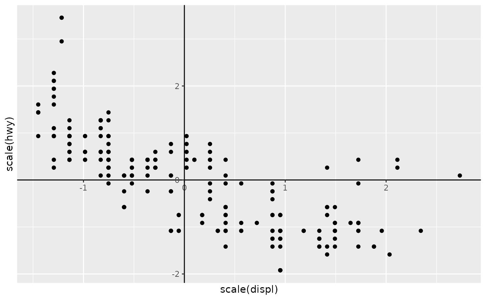
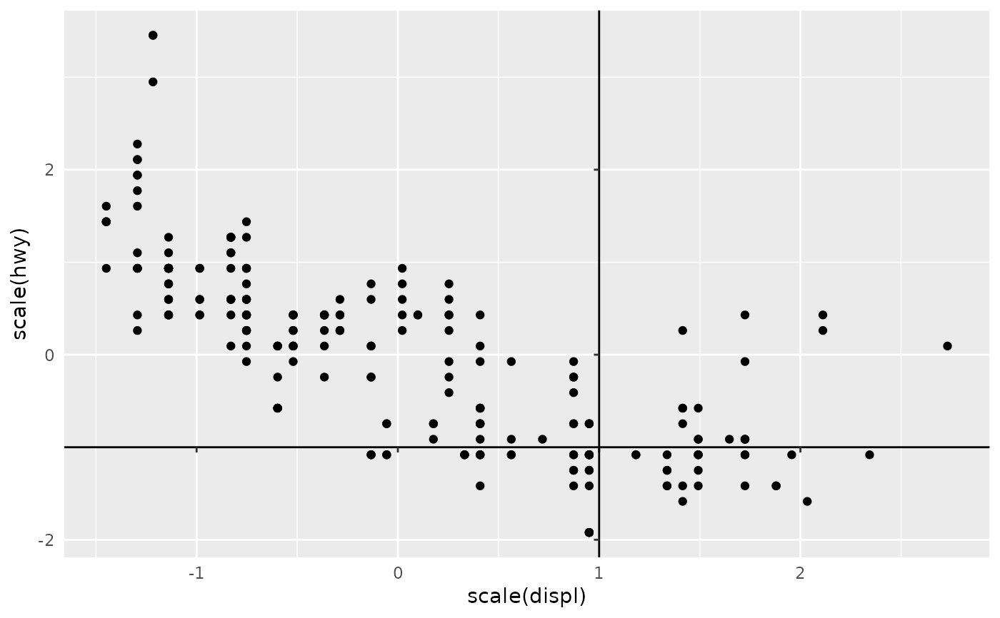
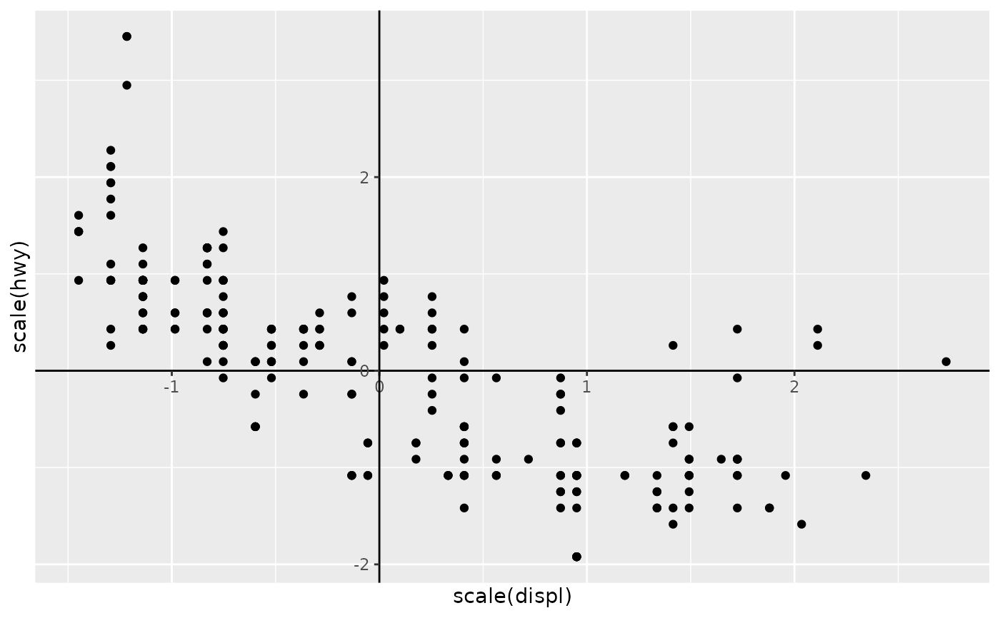
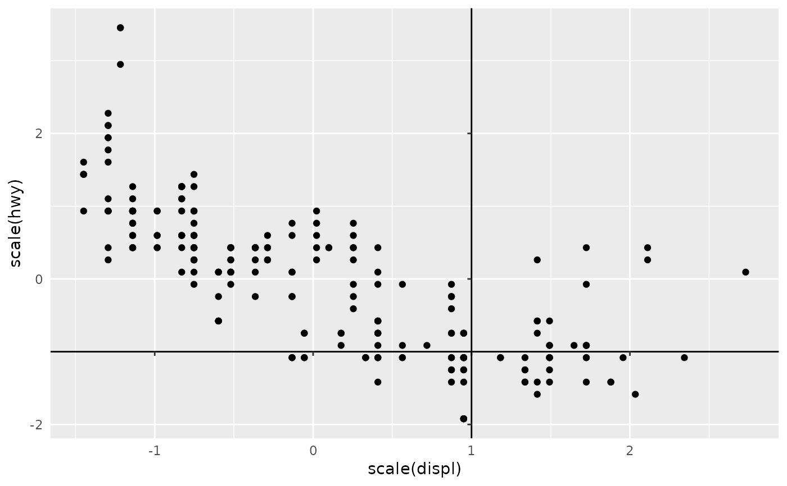

This coordinate system places the plot axes at interior positions. Other
than this, it behaves like coord_cartesian() or
coord_fixed() (the latter if the ratio argument
is set).
Usage
coord_axes_inside(
xlim = NULL,
ylim = NULL,
xintercept = 0,
yintercept = 0,
labels_inside = FALSE,
ratio = NULL,
expand = TRUE,
default = FALSE,
clip = "on"
)Arguments
- xlim, ylim
Limits for the x and y axes.
- xintercept, yintercept
A
numeric(1)for the positions where the orthogonal axes should be placed. If these are outside the bounds of the limits, the axes are placed to the nearest extreme.- labels_inside
One of
"x","y","both"or"none"specifying the axes where labels should be placed inside the panel along the axes.TRUEis translated as"both"andFALSE(default) is translated as"none".- ratio
Either
NULL, or anumeric(1)for a fixed aspect ratio, expressed asy / x.- expand
If
TRUE, the default, adds a small expansion factor to the limits to ensure that data and axes don't overlap. IfFALSE, limits are taken exactly from the data orxlim/ylim.- default
Is this the default coordinate system? If
FALSE(the default), then replacing this coordinate system with another one creates a message alerting the user that the coordinate system is being replaced. IfTRUE, that warning is suppressed.- clip
Should drawing be clipped to the extent of the plot panel? A setting of
"on"(the default) means yes, and a setting of"off"means no. In most cases, the default of"on"should not be changed, as settingclip = "off"can cause unexpected results. It allows drawing of data points anywhere on the plot, including in the plot margins. If limits are set viaxlimandylimand some data points fall outside those limits, then those data points may show up in places such as the axes, the legend, the plot title, or the plot margins.
Examples
# A standard plot
p <- ggplot(mpg, aes(scale(displ), scale(hwy))) +
geom_point() +
theme(axis.line = element_line())
# By default, axis text is still placed outside the panel
p + coord_axes_inside()
 # However, this can simply be changed
p + coord_axes_inside(labels_inside = TRUE)

# The place where the axes meet can be changed
p + coord_axes_inside(xintercept = 1, yintercept = -1)

# Axes snap to the nearest limit when out-of-bounds
p + coord_axes_inside(xintercept = -5, yintercept = Inf, clip = "off")
# However, this can simply be changed
p + coord_axes_inside(labels_inside = TRUE)

# The place where the axes meet can be changed
p + coord_axes_inside(xintercept = 1, yintercept = -1)

# Axes snap to the nearest limit when out-of-bounds
p + coord_axes_inside(xintercept = -5, yintercept = Inf, clip = "off")
 # Can be combined with other non-default axes
p + guides(x = guide_axis(minor.ticks = TRUE)) +
coord_axes_inside()
# Can be combined with other non-default axes
p + guides(x = guide_axis(minor.ticks = TRUE)) +
coord_axes_inside()